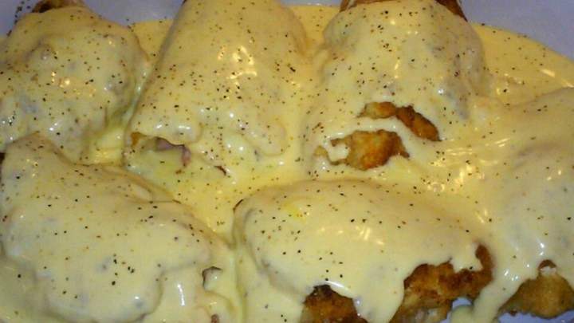

- 1 Cup Milk
- 1 Cup Dry Bread Crumbs
- 6 skinless, Boneless Chicken Breast Halves
- - Pounded to 1/4 inch Thickness
- Salt and Pepper to Taste
- 6 Slices Cooked Ham
- 6 Slices Swiss Cheese
- 2 Tablespoon Vegetable Oil
- 1 Can Condensed Cream of Chicken Soup
- 1/2 Cup Heavy Cream
- Preheat oven to 350 degress F.
- Place Milk and bread crumbs in two separate shallow bowls.
- Season the chicken with salt and petter.
- Place one slice of ham and one slice of cheese on each piece of chicken.
- Roll, and secure with toothpicks.
- dip each chicken roll into milk, and then into bread crumbs.
- Heat oil in a large skillet over medium-high heat. Brown rolled chicken on all sides.
- In a small saucepan over medium heat, blend soup and cream; season with salt and pepper to taste. Pour over the chicken.
- Bake in the preheated oven for 15 minutes, or until chicken is no longer pink and juices run clear